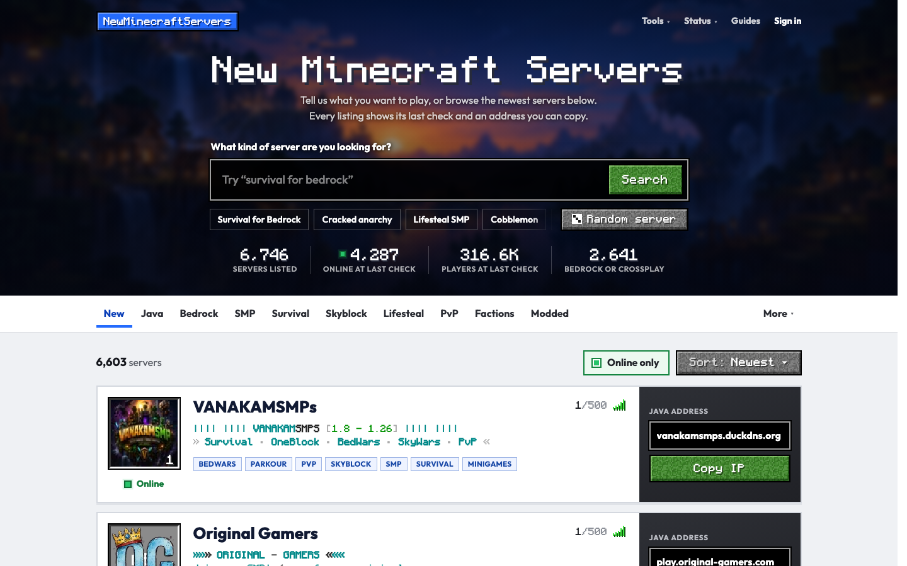

My Survival SMP12/100
Survival • Season 4 is live!
NMS-7K3QPX9A
IN GAME AND IN THE CONSOLE
Players see what they can use. Operators also get the owner tools. Click a line to type it.
ONE COMMAND
The code shows in your server list only while we check, then your MOTD is back. server.properties is never touched.
NO TAB-SWITCHING
Live status, peak and average players, uptime, and your busiest hour. Look up any listed server too.
NEWMINECRAFTSERVERS.NET
Thousands of servers, each checked every 10 minutes. Claim yours to edit its page, links, and banner.
